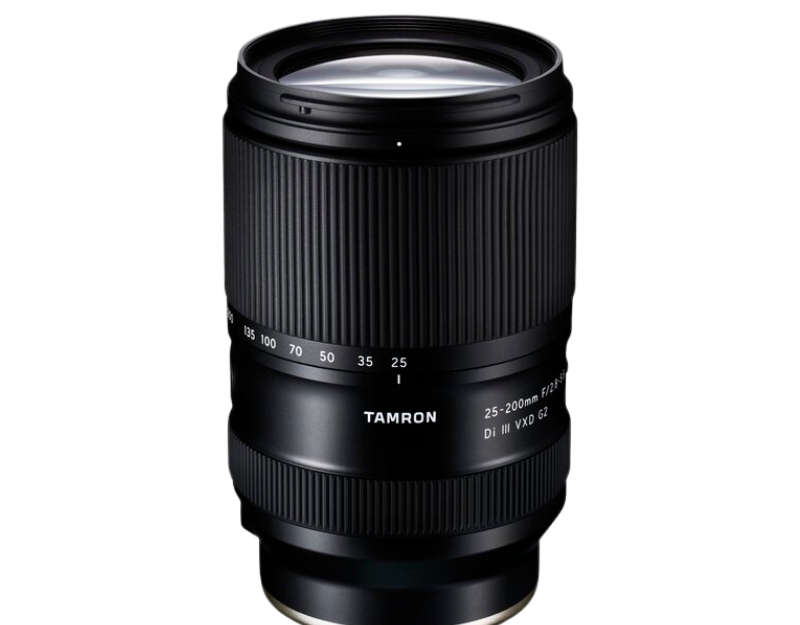
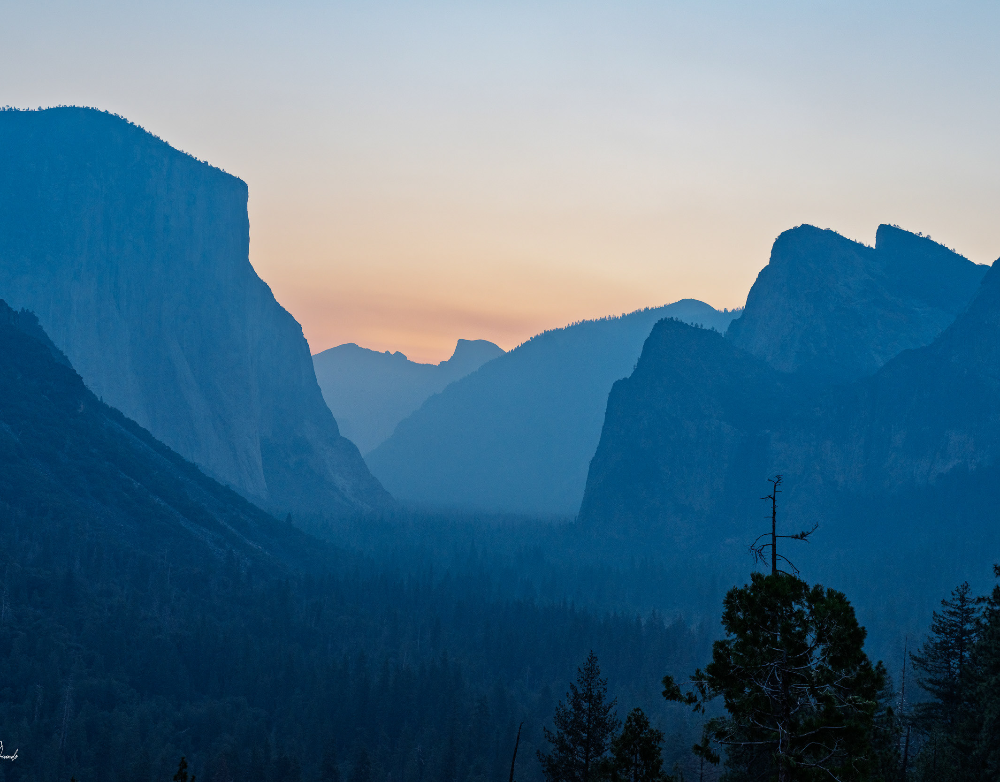
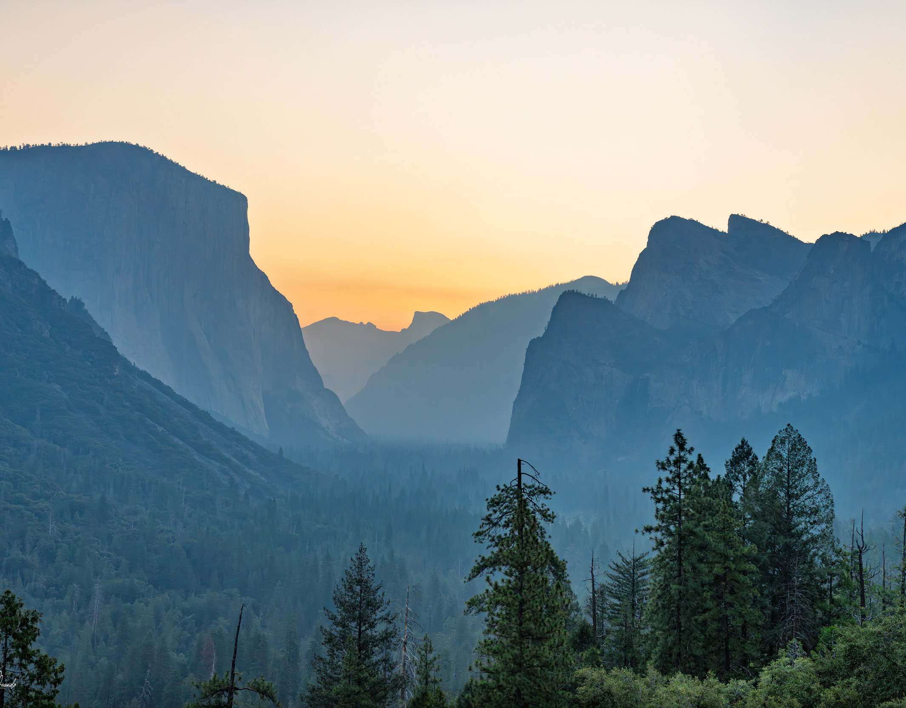
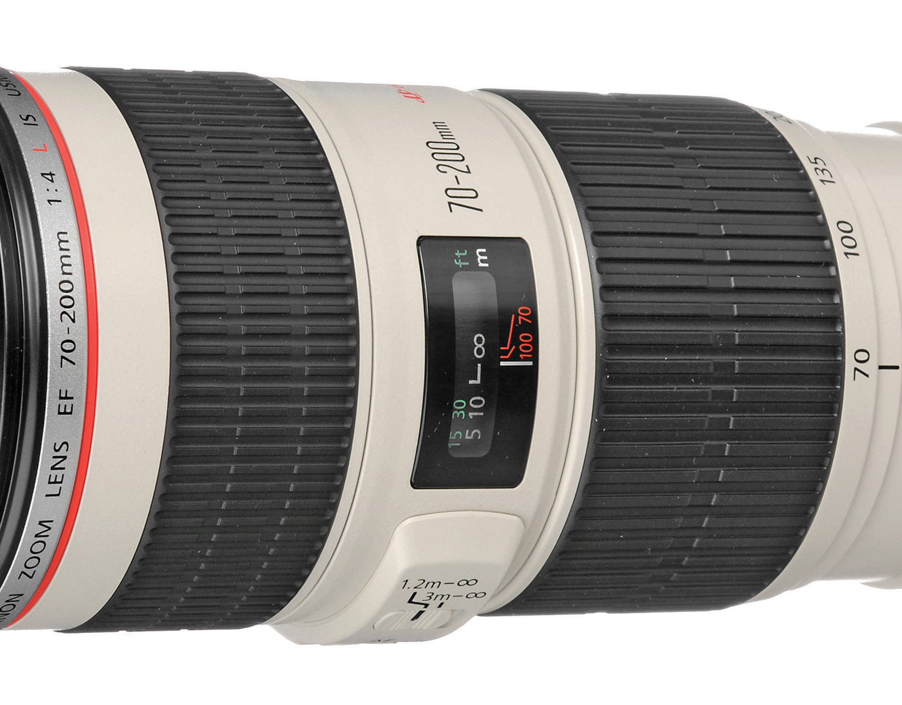
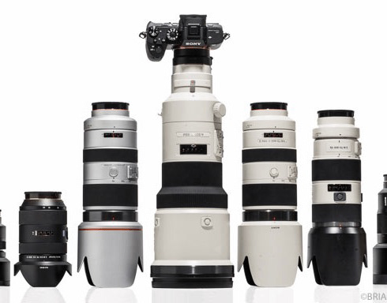

Blog
Stories from the road, gear decisions (good and bad), and what I learn along the way.
-

My Switch Story · Part 4
Learning From My Photography Gear Mistakes
One thing is certain: you never stop learning from your mistakes.
Read the post → -

A photographer's log for a one day visit to Yosemite National Park
October 4th, 2025
Before we begin, let me say that you should try your best to spend at least a couple days in Yosemite National Park in California. And not because is so large that you need a lot of time to…
Read the post → -

My Switch Story · Part 3
My Switch Story part 3 - Settling on flexibility.
September 27, 2025
Last early September I was able to take a short trip to Yosemite. 22 hours behind the wheel and 900 miles driven got me to enjoy one of what I consider the Landscape Photographer's Dream…
Read the post → -

My Switch Story · Part 2
My switch story part II - a big upgrade
August 16, 2025
Back in 2006 I purchased one of the best lenses I ever owned, the mighty white and red line “L” glass Canon 70-200 f/4 L. The micro contrast, sharpness and sublime out of focus rendering…
Read the post → -

My Switch Story · Part 1
My Switch Story part 1 - The big change
Why I switched from Panasonic Lumix micro 4/3s to Sony Alpha Full Frame mirrorless.
Read the post →